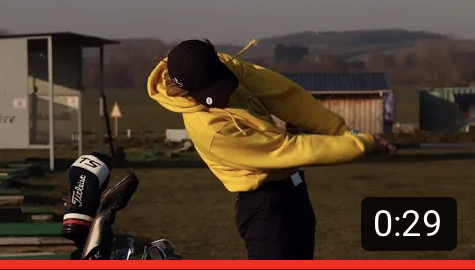
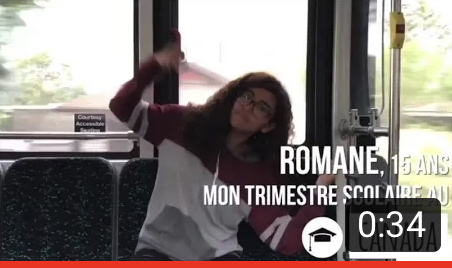
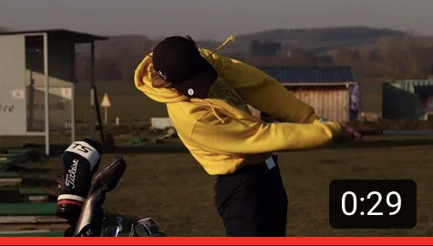
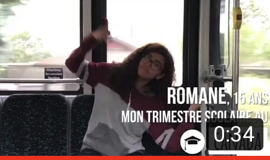

Hi, welcome to my profile !

Hello my name is Romane Cavallucci, I come from France and I'm freshly 18.
When I was 15 I had the opportunity to study in Canada. There I've also discovered film-making. It is a passion that I've discovered and which it is keeping me curious and excited everyday since then.
However, I'm currently studying at ESSEC.I'm learning Spanish (LV2), Italian (LV3) and all of the basis knowledges needed to understand the economical world we live in. My aim is to combine my passion and the abilities that I'll gain here, in my future jobs.
Welcome to my portofolio!
Film-making
As previously said I am passionate about film-making. The fact that I am able to translate the feelings lived on the moment through a technologic tool far away from the emotions.
From a publicity campaign that I've done for my High School, to an Instagram add (stories and feeds) for WEP an international exchange programm. Passing through the making-off of the installation of Les Promenades Photographiques or other shootings...
I've enjoyed diversifying my productions and my skills through these different types of trainings. And I'm currently working on learning how to use the Adobe Suite .
 



My professional experiences
E Caselle, an hotel restaurant in Corsica, in August 2020.Corn Castration, Corn Castration in Vendome, in July 2020.
La Faim de Loup, a snack/bar in Bayeux, in 2018.
MAD STUDIO - Eric-Charles Donatien, a luxurious feather craftman in the high fashion and luxurious industry in Paris, in June 2017.
La Maison Du Chocolat, a chocolate factory in Bayonne, in January 2017.
My skills
Adobe Suite
iMovie
Communication on social media (Instagram, Facebook: accounts, events...)
Creativity
Follow me !